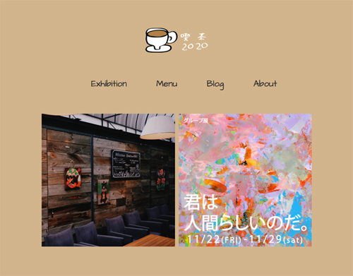
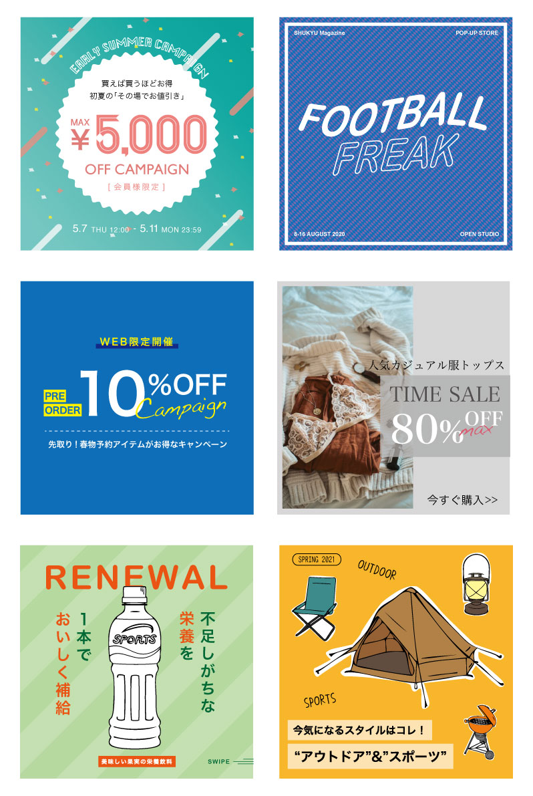
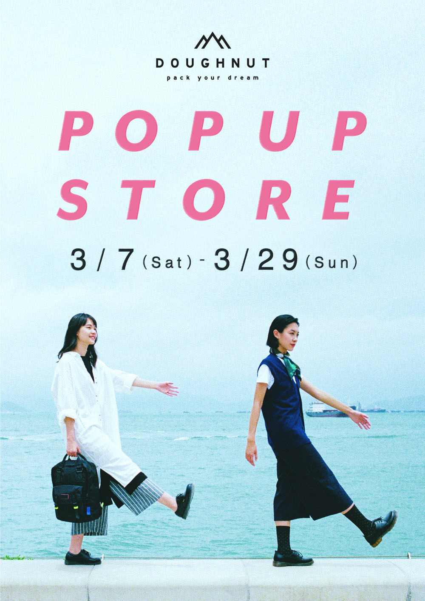
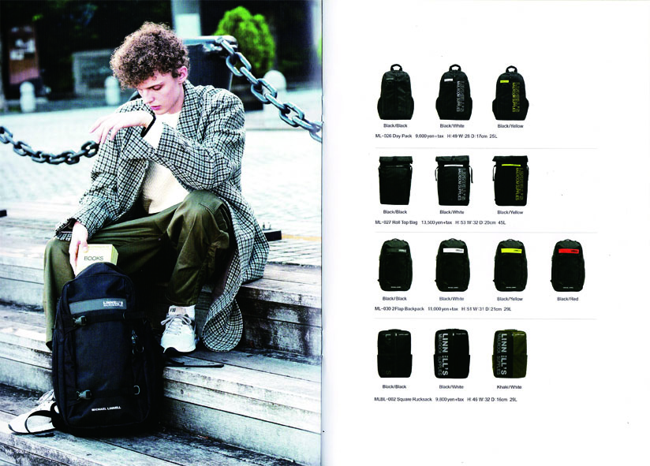
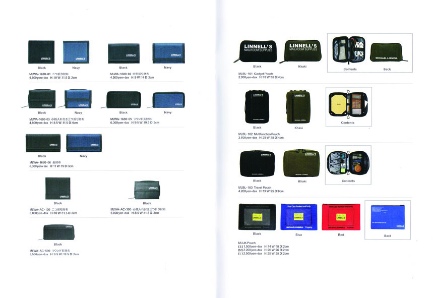

WEBデザイン / コーティング
実務では楽天やAmazonなどのECサイトの商品管理や更新を経験。またhtml、CSSでコーティングが出来ます。
グラフィックデザイン
カタログ、チラシ、POPのデザインを企画から入稿を一通り経験。前職では営業を通して、デザインと提案を行っていました。
その他
商品の写真撮影、切り抜き加工や新作商品のプレスや、取引先への販促物のご提案などの資料作成、電話対応など。社内で円滑に作業できるように率先して様々な業務に取り組んできました。
webデザイン / コーティング
自主制作など

喫茶2020 架空カフェサイト
| 製作時期 | 2021年4月 |
|---|---|
| 担当範囲 | デザイン全般、コーティング |
| 概要 | 架空の喫茶ギャラリーサイト |
| ポイント | ナチュラルな店舗雰囲気に合わせて、茶色をメインにした色使いにしました。 レスポンシブにしても写真が映えるように工夫しました。 |
#design
#coathing

バナー
| 製作時期 | 2021年7月 |
|---|---|
| 担当範囲 | 自主制作 |
| 概要 | 実存しているバナーを参考に制作しています。 |
#design
グラフィックデザイン
アパレルや飲食の販促デザインを経験

アパレル商品 ポスター
| 製作時期 | 2020年3月 |
|---|---|
| 製作チーム | 営業(1名) / AD兼デザイナー(本人1名) |
| 担当 | ポスターのデザイン、写真の選定 |
| 概要 | 春の新生活のポスターとして「前に進む写真」を選定。 またタイトルを色にすることで春をイメージ。 |
#illustrator
#photoshop


アパレル商品 カタログ
| 製作時期 | 2017年4月~2020年3月 |
|---|---|
| 製作チーム | 営業(1名) / AD兼デザイナー(本人1名) |
| 担当 | カタログデザイン、写真選定 |
| 概要 | 年に5、6回製作。1度に300部配布 商品の種類が多いため、なるべくカテゴリー別になるように工夫しました。 |
#illustrator
#photoshop
クライアントが伝えたい情報と魅力をお客様に伝えることがしたいと思い、デザインをしています。
料理教室兼飲食店と輸入アパレルの代理店などの販促デザインやEC運営を担当しました。
| adobe | liiustrator / Photo shop |
|---|---|
| office | Word / Excell / Power Point |
| html / css |